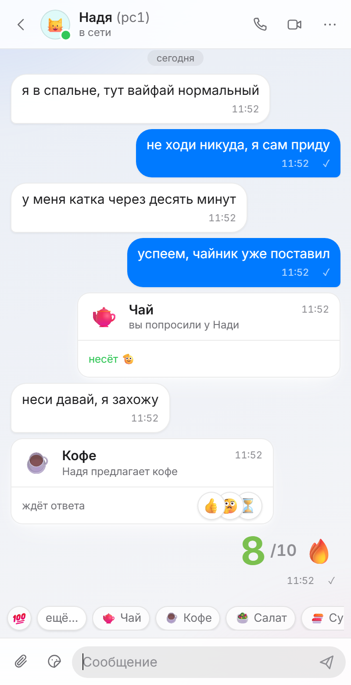
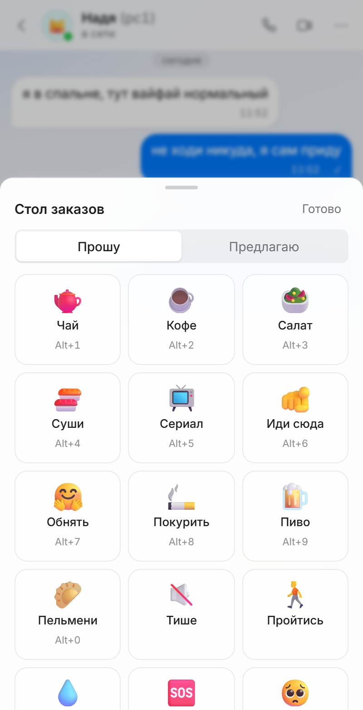
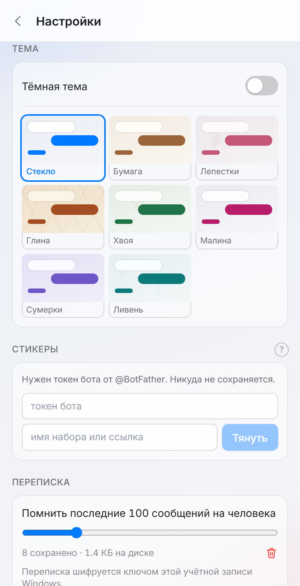

Локальный чат
Запустили на второй машине — она в списке через пару секунд. Настраивать нечего.
Локальный чат для своих
Играть с детьми, своей парой или друзьями. Голос, экран и файлы идут напрямую между двумя окнами — без сервера посередине.
С GitHub Releases · 11 МБ
Может пойдем поиграем?
ок, но мне нужно закончить дела и пойдем
Чай
вы попросили у Нади
Кофе
Надя предлагает кофе
Запустили на второй машине — она в списке через пару секунд. Настраивать нечего.
С пк на пк напрямую, любого размера. Скрепкой, перетаскиванием или из буфера.
Голос и видео между двумя окнами. Без серверов посередине — отсюда и задержка.
Рабочий стол или одно окно — отдельно от звонка, так что можно и вместе, и вместо.
Переписка между машинами закрыта всегда, отключить нельзя. История на диске — под паролем, если захотите.
Восемь палитр, у каждой светлая и тёмная. Или своя картинка на фон.
Предложите кофе, попросите пельмени, позовите в игру — на той стороне это карточка с кнопками, а не текст. Наведите на кружки под ней — они разъезжаются, тыкаете один.
И оценка на что угодно
Кофе
вы предложили Наде
Пельмени
Надя хочет пельменей
В игру
вы позвали Надю в катку



Придуман для локального общения, без необходимости запускать Discord или другие программы.
Добавлены возможности взаимодействовать реакциями и хотелками, предложить перерыв, позвать играть, попить чай или пойти спать.
«Рядом» — это локальный чат по локальной сети для компьютеров в одной квартире или офисе. Программа связывает машины напрямую через вашу локальную сеть (Wi-Fi роутер или проводную): интернет не нужен, регистрация и аккаунты не нужны, сервера посередине нет. Запустите «Рядом» на двух ПК с Windows — они найдут друг друга в сети за пару секунд, и можно писать.
Кроме сообщений, чат умеет передавать файлы по локальной сети любого размера с компьютера на компьютер, звонок с голосом и видео и демонстрацию экрана — всё напрямую между машинами, поэтому быстро и без задержек облачного сервиса. Переписка между компьютерами всегда зашифрована, а история на диске может быть закрыта паролем.
Нет. «Рядом» работает по локальной сети. Интернет не требуется вообще.
Да, полностью бесплатно и без рекламы. Программа не собирает о вас никаких данных.
Запустите на ПК — они найдут друг друга сами.
Проблемы проекта можно завести на GitHub. Предложения и обратная связь — заходите в Discord.
«Рядом» — свободная программа. Работает без интернета и не собирает о вас ничего.